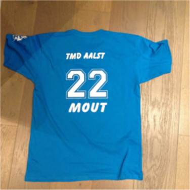

Sporten is in het algemeen een van mijn favoriete hobby's. Ik heb al vele sporten geprobeerd en een voor
een waren ze leuk om te beoefenen. Jammer genoeg kan ik ze nooit lang volhouden. Ik heb namelijk een zeer
zwakke onderrug.
Ik heb een
spondylolyse (meer daarover in de info tab!). Sinds mijn laatste bezoek aan het ziekenhuis,
heb ik wat nieuwe info. Blijkbaar heb ik nooit een spondylolyse gehad, maar zit ik al sinds ik 3 was met
een
scoliose. Elke dokter die ik bezocht heb heeft mij al iets anders verteld dus als het onduidelijk is,
wees dan gerust gesteld dat ik er ook niet wijzer in ben! Wat ik je wel kan beloven is, dat het zeer frustrerend
is voor iemand die graag sport, om niet te kunnen sporten. Ik hoor je al komen, zal het ooit beteren? Hoogstwaarschijnlijk
niet, al hoop ik daar natuurlijk wel op. Hier zijn enkele sporten die ik al beoefend heb en die mij het meest
bijgebleven zijn:
Gelukkig is sport niet het enige wat ik graag doe.
Muziek
Music is life! ~ STU BRU
En groot gelijk dat ze hebben! Vroeger maakte ik zelf muziek als ik op mijn
gitaar aan het spelen was. Later had ik dan ook de ukelele gevonden. Echt een tof instrument! Op dit
moment ben ik ongeveer gestopt met spelen. Ik grijp niet te veel meer naar mijn gitaar of ukelele, behalve
tijdens de examens. Voor de een of andere reden begin ik altijd terug te spelen. Misschien om te ontstressen?
Op die momenten denk ik altijd
Damn! Ik moet echt terug beginnen met spelen! De uren die ik in die instrumenten gestoken heb is immens
en ben het oefenen echt beu. Ben dan ook al een tijdje gestopt met lessen te volgen. Als er ooit een instrument
is dat ik graag nog zou leren, dan is het wel keyboard.
Het is niet omdat ik gestopt ben met spelen dat ik niet meer bezig ben met muziek. Elke dag, elke seconde
die ik over heb, ben ik bezig met muziek. Het analyseren van ritmes, het vergelijken van liedjes, ... De
magie als ik het zo mag noemen, dat voortvloeit uit muziek grijpt mij elke keer weer! Ik kan en zal er nooit
genoeg van krijgen!
De laatste groep van hobby's die ik wil bespreken zijn natuurlijk IT gerelateerd. Sinds ik een kleine jongen
was, heb ik altijd een interesse gehad voor computers en hoe ze werken. Op dit moment ben ik aan dit aan
het studeren en dus kan de richting niet veel beter worden!
Floorball

Floorball T-shirt TMD Aalst [2015]
Ik ben in contact gekomen met floorball door een van beste vrienden, Johannes en school. We moesten allemaal
een onderwerp kiezen om zelf les over te geven en hij had gekozen voor 'zijn' sport, floorball. Ik vond het
meteen een geweldige sport en, in tegenstelling tot mijn klasgenoten, vertelde hij mij dat ik vrij goed was
voor een beginner. Hij vroeg dan ook meteen of eens wou gaan trainen met hem. Zogezegd, zo gedaan, en ra
ra... wie zat er een week later bij TMDAalst? IKKE! Ik was ineens een deel van The Mighty Devils Aalst, spannend!
Omdat ik toch nog altijd een beginner was, werd ik bij de 'Whites' geplaatst terwijl Johannes bij de 'Blacks'
zat. Onze eerste match was natuurlijk ook tegen hen. Verpletterd werden we op onze plaats gezet. Desalniettemin,
gaf dit ons juist extra energie om te werken en uiteindelijk tot de Blacks te behoren! Jammer genoeg was
mijn avontuur van korte duur. Ik had er nog geen half jaar op zitten of mijn blessure.
De spondylolyse... (op L4 voor de dokters die dit lezen en nee, niet langs beide kanten) stak zijn hoofd
weer eens boven water. Het ging dus blijkbaar om mijn scoliose. Daar is alle last terug gestart.
Ik had wel meerdere keren last in dat eerste halve jaar. Daarom dat ik eigenlijk altijd in blokken moest
treinen van 2-3 weken waarna ik even uit was om te recupereren van de pijn. Ik heb 4 matchen meegespeeld
van de 10, toch naar elke gaan kijken en ik beloof het je, het doet pijn om op de zijlijn toe te kijken hoe
je team elke keer vecht voor die overwinning. Uiteindelijk ben ik gestopt. Heb vroeger nog een paar keer
geprobeerd om opnieuw te starten, maar na 10 min schieten naar een doel moest ik alweer stoppen van de pijn.
Moest ik kunnen, zou ik niet meer beginnen. Dit klinkt misschien raar maar om op deze leeftijd nog een beginner
te zijn in de sport, dan geraak je er nergens mee. Ik ben nog naar een aantal matchen geweest en de kriebels
die ik dan kreeg om op het veld te springen en mee te doen waren gigantisch!
Tennis/Tafeltennis
Ik in mijn jonge jaren die tennis speelde!
Ik was gestart met tennis omdat mijn ouders mij en mijn broer naar een tenniskamp hadden gestuurd. Nu moet je
weten dat wij het haatte om op kamp te gaan. We keken er dan ook erg tegenop. Ben ik blij als ik er nu op
terug kijk dat ik geweest ben! Wanneer we toekwamen, was er al een groep van onze leeftijd die allemaal vrienden
waren. Sommigen hadden de hoogste rang; 'Groen', behaald. Door onze leeftijd werden Robbe (mijn broer) en
ik ook meteen in Groen geplaatst ook al hadden we nog nooit gespeeld. Anderen hadden daar al een jaar of
2 moeten voor werken en dus werden we ook niet er goed ontvangen. Goedde start! We werden genegeerd door
iets waar we niet eens iets aan konden doen. Beetje bij beetje leerden we toch iemand van de groep kennen.
Tom, mijn beste vriend. Hij had ons dan in de groep ingevoegd en al snel hadden we door dat we eigenlijk
heel goed met elkaar overeen kwamen. Nu zijn die gasten nog altijd een van mijn toppers! Vanaf dat jaar zijn
we dan ook elk jaar met dezelfde groep naar het tenniskamp geweest tot we te oud waren. Echt tennissen is
veel gezegd, eerder wat losjes spelen en rondspelen. Als we wouden, konden we ook echt nog mooie rally's
spelen, maar dat was zelden het geval (al verbeterde dat wel met ouder worden). Het enige stomme aan het
kamp waren de verplichte toernooien. Ik was altijd zeer gestrest om te spelen en deed dit dan ook echt totaal
niet graag. Nog een reden om niet volledig mijn best te doen, straks werd ik nog gevraagd voor het competitie
team! Het was een hobby, niet meer dan dat. Ook hier speelde mijn rug weer partte en ben ik moeten stoppen.
Dit leidt mij tot tafeltennis. Een aantal jaar na mijn laatste tenniskamp ben ik begonnen met spelen. Bewegingen
waren gelimiteerd dus misschien kon ik dit wel volhouden? Opnieuw fout! Na een jaar ben ik ook hiermee moeten
stoppen.
Waar moet ik beginne met deze hobby? Ik denk toen ik 4 jaar was. Aller eerste keer gaan skiën en meteen verslaafd
(nog altijd niet afgekickt)! Daarom trekken mijn familie en ik elk jaar de bergen in om de pistes onveilig
te gaan maken. Ondertussen ben ik een volleerde skiër, of toch op het vlak van techniek. Het is ondertussen
al een tijd geleden dat ik nog geskied heb en dus heb ook niet echt meer op mijn jumps geoefend. Ik heb ongeveer
10 a 11 jaar geskied. Na zo een lange tijd, heb je wel al eens zin in iets nieuws. Dat is wanneer ik begonnen
ben met snowboarden. Omdat ik zo jong was weet ik niet veel meer van mijn eerste ski ervaring af, maar snowboarden
weet ik nog al te goed! De eerste 3 dagen waren absolute hel! Vallen, vallen en nog een vallen. Mijn staartbeentje
was aan het schreeuwen van de pijn. Toch ben ik blijven proberen en ineens na een nachtje slapen kon ik snowboarden.
Een berg af zonder vallen, oh boy was dat fijn! Op dit moment snowboard ik liever dan skiën. Waarschijnlijk
omdat het nog relatief nieuw is in vergelijking met skiën en omdat ik bij snowboarden wel geoefend heb op
mijn jumps. Dit wil niet zeggen dat ik nooit meer ga skiën, allen dat ik voorlopig bezig ben met snowboarden.
Als ik een favoriet onderdeel moet kiezen is het zeker weten van die goedde verse diepsneeuw. Naar achter
leunen en door de sneeuw snijden. GEWELDIG!
Voor de echte snowboardkenners, ik heb liever een flexibele plank. Ik weet het, minder snelheid maar je pakt
veel beter jumps en de schokken van onverwachte bulten komen minder hard aan (belangrijk voor mijn rug).
Ook ben ik de snelste van de familie dus moet ik de 'oudjes' een kans geven om mij bij te houden. De laatste
2 jaren is
Tom, mijn beste vriend ook mee geweest. Als je ons tegenkomt, pas dan maar op want geen enkele piste
in nog veilig, alors!
Fitness
Ik op mijn sexiëst in de fitnes... (dank je wel voor die foto
Tom!) [2016]
Biceps, triceps, quadriceps, leg day, ... Enkele woorden die in het dagdagelijkse leven niet al te vaak tegenkomt
tenzij in het leven van een gemotiveerde fitnesser. Gemotiveerd of niet, velen weten eigenlijk totaal niet
waar ze over bezig zijn. Gelukkig is er uitzondering op de regel(IK!). Fitness was een soort van last resort
sport om toch nog in beweging te blijven met mijn rug. Dit brengt mij natuurlijk weer bij mijn
spondylolyse scoliose. Geloof het of niet, maar werken met gewichten was minder pijnlijk voor mijn
rug dan elke andere sport die ik tot dan al geprobeerd had. Jammer genoeg bleef het niet zo. Na een jaar
is er toch iets ingeschoten waardoor ik ook met fitnes ben moeten stoppen. Heb wel enkele geweldige momenten
meegemaakt met mijn bestie en fitnessbuddie
Tom. We gingen bijna dagelijks om de lokale BasicFit te terroriseren. Altijd net niet stervend terwijl
we onze abs reeks deden. Al die herinneringen bergen opnieuw pijn naar mijn buikje! Ultieme goal? Six pack
natuurlijk! Daarvoor moest je ook elke dag trainen. Moest ik kunnen (en wanneer ik misschien ooit weer zal
kunnen), ga ik meteen terug beginnen met om mijn achterstand op Tom in te halen en mijn "hemelse" lichaam
terug op te bouwen! Voor nu zal ik het moeten stellen met een minimum van oefeningen en gewichten thuis.
WE DO IT FOR THE ... GAINS!!!
Gitaar/ukelele
Ik en mijn elektrische gitaar [2014]
Ah, het wonderbare instrument, de gitaar. Ik ben nu al een tijdje aan het spelen. Ik ben gestart rond 2006. Sindsdien
heb ik al heel wat leraars gehad. Ben gestart in de muziekschool waar ik 2 diploma's heb behaald. Nadien
heb ik zo'n 2 – 3 jaar privéles gevolgd. Daartussen heb ik ook nog les gekregen van mijn nonkel. We
hebben ook nog samen gespeeld op familiefeesten. Als je al die jaren optelt kom je aan iets van een 6 tot
7 jaar les. Na die 7 jaar had ik er echt even genoeg van om elke dag te oefenen en dit werd dan ook verwaarloosd.
Natuurlijk weet elke muzikant dat je niet kan verbeteren als je niet oefent. De lessen begonnen dan ook eerder
oefensessies te worden en dus ben ik maar gestopt. Het grootste probleem was dat ik nooit liedjes speelde
die ik graag hoorde/speelde maar ik kon er ook nooit zelf voorstellen om te spelen. Ik luisterde niet veel
naar liedjes met zotte solo's in of een tof slagpatroon. Het is niet omdat ik stopte met de lessen dat ik
stopte met gitaar. Toch in begin niet. Na een tijdje op mijn eigen tempo verder te doen is ook dat afgezwakt.
Nu speel ik zeer sporadisch nog eens.
In de foto zie je mijn elektrische gitaar, maar thuis staat er ook nog een klassieke en een ukelele.
Om even terug te komen op he spelen voor mensen en op familiefeestjes. Ik doe dat totaal niet graag! Het
liefst speel ik voor mezelf met niemand rondom mij. Dat komt opnieuw omdat ik zeer verlegen ben en denk dat
het nooit genoeg is voor de mensen rondom mij.
Om mijn ritmische zelf nog bezig te houden, had ik mij ook een ukelele gekocht. Je weet wel, een gitaar
met vier snaren(
GEEN BANJO!). Het is echt een grappig instrument. Perfect voor van die late zomeravonden op het strand.
Het kampvuur is hevig aan het branden, de gemoedstoestand is warm, misschien zelfs een beetje tipsy. Love
is in the air en dan de ukelele om het tot een nog hoger niveau te brengen. Geweldig!
Ik heb al getwijfeld om te leren piano spelen maar daarvoor zou ik eerst moeten noten leren lezen (heb nooit
notenleer gedaan tijdens mijn gitaar opleiding). Dat klinkt zo veel werk en daar heb ik voorlopig geen zin
in.
IT
Ik die deze site aan het coderen ben.
Programmeren, webdevelopment, netwerken, noem het op en ik vind het interessant. Ik vond het al interssant toen
ik 14 jaar was en dus mijn keuze was snel gemaakt wat ik later wou gaan studeren. Ik wou zo graag eigen sites
kunnen maken, eigen software schrijven en kijk nu, ik ben gewoon mijn eigen site aan het schrijven, aan het
doen wat ik van droomde. Ik hou van wat ik doe en wil het zo lang mogelijk blijven doen. Later zou ik graag
ofwel werken voor Google en deel uit te maken van hun AI programma ofwel een eigen bedrijfje opstarten. Ik
geloof niet in al die "zever" over hoe AI's de wereld gaan overnemen. Typisch voor mensen om over iets nieuws
eerder negatief dan positief te denken. AI's kunnen zo veel helpen in zo vele sectoren in de toekomst en
ze zullen er zeker weten een deel van zijn.
Een ander interessante richting is de cybersercurity. Het encrypteren van, het vinden van nieuwe manieren
om te encrypteren, het decrypten van, .... Dit brengt mij natuurlijk ook tot het hacker topic. Er is nog
zo veel te doen, zo veel om te leren! Het leuke aan deze richting in mijn ogen is het feit dat deze wereld
nooit stil zal staan. Of het nu goed(nieuwe manier van coderen, nieuwe en krachtige taal) of slecht (nieuwe
malware of andere gevaren), we kunnen van alles leren en verder evolueren. Vervelen is onmogelijk, elke dag
komt er wel iets nieuws uit!

![Foto van mij wanneer ik jonger was en tennis speelde [2011]](../IMAGES/tennis.JPG)